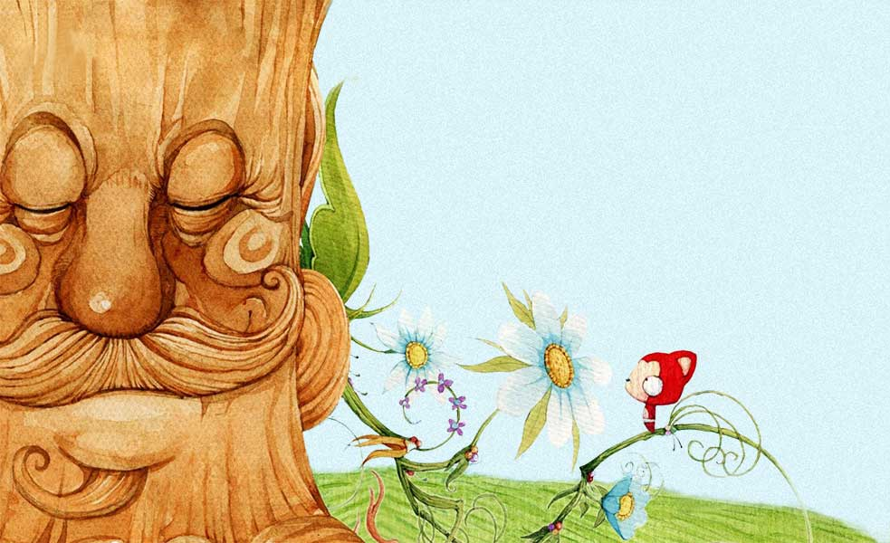

致自己最爱的女孩❤豆豆❤
我会用自己的所有去补偿给你的伤害，
以后不管你去了哪里，
我都一定会陪着你一起，
哪怕有再多的阻碍，
我最后也一定会把你娶回家，
我要让全世界都知道我们在一起了，
就像我之前带你看晴雅集的时候说的，你是我最想守护一辈子的女孩。
后面是我想对你说的，看完好嘛。
记得我们两个第一次认识是在风投课上，
那时候其实我就喜欢偷看你了，
但我知道你会说我那是猥琐。 〒▽〒
那之后在清真食堂经常能遇到你。
我总是会找一个能看到你的桌子坐下，然后偷偷地看你吃东西，看你和同学聊天，看你开心的笑。
特别喜欢你笑的样子，总是能让我心里感到很温暖。

记得有一次在食堂吃饭时偷看你，你突然转过头来也看了我一眼，我赶紧把头低了下去。当时的心跳真是瞬间加速，可表面上还是装作在认真吃饭的样子。

过年的时候，我发了一个回答问题的朋友圈，你回复了我，我当时真的是好开心，后面就各种找话题和你聊天，那时候心里真是美滋滋的。

开学我们俩第一次去看电影，我厚着脸皮牵了你的手。其实那时候我心里也是七上八下的，万一你甩开了该怎么办。

我本来就不太会和女生说话，所以刚开始和你在一起的时候完全不知道应该怎么做，老是把事情搞糟。
幸亏你比较能说话，这才让我们度过了开始有点小尴尬的时期。

我知道刚开始我太急了，老是各种占你的便宜。因为我怕你觉得我太无聊就离开我，我那样做可能你就不会离开了。

那段时间我觉得好幸福，尤其是在哈工大门口你第一次主动亲我，都让我有点飘飘然了。

可我却老是以自我为中心，那一次明明知道你要搬宿舍，可还是跑去上网球课了，让我差点失去了你。

后来你还是原谅了我，能再次抱着你原来是那么幸福，那时候我才知道可能有些离不开你了。

那次我的腿摔伤了，你带我去医院看病。我当时已经疼的不太清醒了。
，是你扶着我做各种事，看见你的小身体被压的弓着腰，我真是好心疼。

那段时间我们俩真是轮着去医院，我刚好你又身体不舒服了，不过还是特别喜欢你被我照顾的时候像个小猫的样子。

当时你担心自己生不了孩子都急的哭了，其实我想要的只是和你在一起，有没有孩子又有什么关系。

五月份的时候学校的清真餐厅关门了，我只能自己做饭。
那时我只会做两种饭，西红柿鸡蛋盖饭和水煮菜。
我知道那不好吃，可你还是会每天来陪我吃，我真的很感动。

我们第一次去厦门玩的时候，
看见你在海边蹦蹦跳跳的样子，真的好可爱，那时候我心里就许下要对你一直好的诺言。

有一次我们去游泳，回来的路上你的裙子被自行车夹住，你摔下来的时候我差点吓死了。那时候真的好自责没有保护好你。

后面你要去北京实习了，我其实心里挺舍不得你走的，但是怕说出来会影响到你的决定，所以就只能是不断安慰你。

这段异地的时间里，我每天最开心的就是和你视频的时候，因为在你面前怎么出丑都没关系，看见你被逗笑我也特别开心。


有时候你会在电话里和我闹脾气，
我只能傻傻地在那里哄你，
我舍友看见了都在笑我，可我一点都不介意，
因为把你哄开心就是对我最大的奖赏。

我有时候也会有烦心事，
不过每次看到你就都忘掉了，只想把自己最开心的一面展现给你。
元旦的时候我们俩去杭州玩，
终于能见到你了好开心。
当时看见你俏生生地在车站等我，眼神还有点害怕的样子，
我真想马上就过去把你搂在怀里。

终于能和你在一起了，
我那几天感觉就像飘在云里，
觉得周围的一切都那么美好，
总是会不由自主的傻笑。

后来我们毕业找工作的时候，
你说要给我爷爷买茶叶，我就知道我爷爷一定会喜欢你的。

过年在家里我告诉了父母你的情况，
但他们好像有一种不是很看好你的态度，
我当时心里感到特别气愤。

其实后来我还和他们关于你吵过一次，
他们拿我也没办法，也就不再过问这件事了。

过年回来我收到自己论文被拒的邮件，再加上和父母刚吵过，
心里真的很难受，可我又怕你乱想，所以就没有和你说。

后来我们都开始忙着找实习了，
可能是因为有压力吧，所以脑子里总是乱想。

我的性格总是有些自大，
老是觉得自己以后要去做一些不一样的事。

之前就有出国工作的想法，
觉得只要自己变得足够强，
就可以让一切事情都变好。
可后来慢慢发现这个想法和我们未来的生活产生了冲突，
但我却不知道应该怎么去解决。

后面一段时间又开始忙各种事情，
就再顾不上去想这些了。

我谷歌的面试后来不是很顺利，
就觉得可能出国并不是那么容易吧。

所以就打算安安心心地在国内工作了，这样我们可以更好地在一起。

很喜欢和你在一起学习，
让我感到特别安心，
平时也已经习惯了自行车后座上有你的感觉。
我觉得挺对不起你的，
因为一起吃饭时都要迁就我，
自己也不能随心所欲的去吃。

其实我是那种喜欢被别人需要的性格，
你每次依赖我的时候，
我就特别有满足感。
觉得让你每天过得开开心心的，
就是我最大的成就。

后来我微软的面试通过了，
我心里很开心，
可之前压在心里出国的想法又慢慢冒了出来。
可我想和你一直在一起，
但是又想不出好的解决方案。

那天晚上我们一起看话剧的时候，
你看到我的朋友圈有她的评论，
那时候怕你乱想，就撒了谎。

可最后你还是发现了，
其实我和她已经没有任何联系了，
之所以还保留着微信，
可能只是想让她知道我过得比她好，
但她在我心里早已经没法和你比了。

那天你一直在生我的气，
我还是像往常一样在哄你，
但之前出国的问题开始出现在我脑子里。


晚上我带着你出去买东西，
你让我删掉她的微信，
我当时不知道怎么就有点生气了。
然后我就开始胡思乱想，
慢慢就想到我们俩的未来到底会怎么样，
或许分开对两个人都会更好些。


后面我一冲动就和你说了那些话，
我知道你一定恨死我了，因为连我自己都开始讨厌自己了。
我知道你以为我一直在骗你，
但真的没有，
我之前答应你的都是真的，
我早已经想好要和你永远在一起了。

那天晚上我哭了，
这可能是我十几年来第一次流眼泪，
我真的好伤心。
过去我一直觉得自己非常理智，
可是对于你，我却怎么也无法像原来那样，
因为我已经是那么地喜欢你。

不够后面你还是回到了我身边，
我当时真的好开心，
觉的自己一定会好好的守护着你走下去。

可突然发现没有你了之后，
我在里面看不到一丝的快乐。

因为我已经习惯了陪你开心，
陪你悲伤，
习惯了每天在你面前像个小孩子一样。
我突然发现这才是我想要的，其他的都不重要了。

我其实也幻想过我们未来的生活：
我们俩会有一所自己的房子，可能并不是很大，但会布置得很温馨，
我们会有一个孩子，可能还会养一条狗。

我们俩看着孩子慢慢长大，一家人每天都开开心心，
直到头发都花白了，我们俩还能相偎着一起看日出日落，
这也是我之前一直努力着想要给你的。


晚上我一直没睡，不停地在看着我们俩的聊天记录，
里面有开心，兴奋，也有伤感，思念，
里面有那么多那么多，多的我好像一辈子也忘不光。
我不知道最后会是什么结果，也不知道你愿不愿意原谅我，
但是你让我知道了爱情是什么感觉，
你也是唯一一个我愿意不顾一切地去爱的女孩了。


我会等着你的，如果你还愿意见我的话，我会以最快的速度来到你身边。
好了，最后送你一首诗吧，
《How do I love thee》，我曾经读过的。
原来文字真的可以传达感情，
或许很多东西只有失去了，
才能够真正地明白它的珍贵吧。